Overview
stats2data simulates raw datasets whose summary
statistics match reported summary statistics (the targets).
Each module defines an objective, the discrepancy between the summary
statistics of a candidate dataset and the targets, and minimizes it with
simulated annealing. A run stops once the best objective value falls
below the convergence threshold thresh or once the
iteration budget is spent. In this vignette, a run whose best objective
value is below thresh is called converged.
Convergence is a statement about the optimization only: the simulated
summary statistics reproduce the targets to within thresh.
Many different datasets share the same summary statistics, and a
simulated dataset is one of them. The results below are therefore
described in terms of the optimization (objective values,
target-vs-simulated differences, run-to-run variability), not in terms
of how closely the simulated data resemble the unobserved original
data.
The vignette works through four examples:
- the Descriptives module (
optim_vec()), using the reported marginal statistics of Bardwell et al. (2007); - the MLR module (
optim_mlr()), using the reported correlations and regression estimates of the same study; - the ANOVA module (
optim_aov()), using the reported cell means and F-statistics of Reynolds and Besner (2008), as in the accompanying manuscript; - the parallel workflow
(
parallel_optim()), using the ANOVA example.
Across the examples, the following functions are demonstrated:
- the optimization functions
optim_vec(),optim_mlr(),optim_aov(), andparallel_optim(); - the GRIM check
check_grim(); - the inspection methods
print(),summary(),get_stats(),get_rmse(), andcoef(); - the plotting functions
plot_convergence(),plot_cooling(),plot_fit(),plot_stability(), and theplot()methods; - the Shiny interface
run_app().
Installation
if (!requireNamespace("devtools", quietly = TRUE)) install.packages("devtools")
devtools::install_github("sebastian-lortz/stats2data")Shiny interface
All three modules and the parallel workflow are also available in a point-and-click interface:
The tabs Descriptives, ANOVA, and Linear
Regression correspond to optim_vec(),
optim_aov(), and optim_mlr(). The inputs of
each tab correspond to the arguments of the function (the info icon of
each input names the argument), and setting Number of Runs
above one calls parallel_optim(). The results panel offers
the plots and summaries shown in this vignette. The Download
button exports the result object, the simulated data, and the R code of
the function call, which reproduces the result in R.
1. Descriptives module: Bardwell et al. (2007)
Bardwell et al. (2007, https://doi.org/10.1016/j.jad.2006.06.013) examined
whether depressive symptoms or apnea severity better predict fatigue in
patients with obstructive sleep apnea. The raw data are not publicly
available. The study reports means and standard deviations of four
variables for N = 60 patients, rounded to one decimal.
optim_vec() simulates one vector per variable that
reproduces its target mean and SD.
1.1 Encoding the targets
N <- 60
target_mean <- c(Apnea.1 = 48.8, Apnea.2 = 17.3, Depression = 12.6, Fatigue = 10.8)
target_sd <- c(Apnea.1 = 27.1, Apnea.2 = 20.1, Depression = 11.3, Fatigue = 7.3)
integer <- c(FALSE, FALSE, TRUE, TRUE)
range <- matrix(
c( 15, 0, 0, 0, # lower bounds
111, 80.9, 49, 28), # upper bounds
nrow = 2, byrow = TRUE
)Apnea.1 and Apnea.2 are treated as
continuous, Depression and Fatigue as
integer-valued sum scores. range holds one column of lower
and upper bounds per variable.
1.2 GRIM check
For integer-valued data, not every mean is attainable: the sum of
N integers divided by N can only take values
on a grid of width 1 / N. The GRIM test (Brown &
Heathers, 2017) checks whether a reported mean, rounded to
decimals, lies on that grid:
check_grim(n = N, target_mean = target_mean[["Depression"]], decimals = 1)
#> $test
#> [1] TRUE
#>
#> $grim_mean
#> [1] 12.6
check_grim(n = N, target_mean = target_mean[["Fatigue"]], decimals = 1)
#> $test
#> [1] TRUE
#>
#> $grim_mean
#> [1] 10.8With N = 60 and one decimal, the grid width
(1 / 60) is smaller than the rounding unit
(0.1), so every mean passes. The check is informative for
small samples or more decimals; for a mean that fails,
grim_mean returns the nearest attainable mean (hypothetical
values):
check_grim(n = 7, target_mean = 3.45, decimals = 2)
#> $test
#> [1] FALSE
#>
#> $grim_mean
#> [1] 3.431.3 Running the optimizer
For continuous variables, optim_vec() starts from a
vector whose mean lies within thresh of the target mean and
anneals the values toward the target SD; the moves keep the mean fixed.
For integer variables, it draws a distribution from SPRITE (Heathers et
al., 2018) via rsprite2 whose mean and SD match the targets
at the number of decimals given by sprite_prec. The
objective of each variable is the absolute difference between its
simulated and target SD.
Both statistics are reported to one decimal, so
sprite_prec = c(1, 1), and thresh = 0.05 is
set to half a unit of the last reported decimal. All other arguments are
at their defaults (max_iter = 5e5,
init_temp = 1e-3, cooling_rate = NULL,
i.e. (max_iter - 10) / max_iter,
max_starts = 3).
1.4 Inspecting the result
print() shows the sample size and the best objective
value per variable:
result_vec
#> stats2data Descriptives result
#> Variables: 4
#> N: 60
#> Best objective per variable:
#> Apnea.1: 0.04797
#> Apnea.2: 0.04888
#> Depression: 0.02264
#> Fatigue: 0.04108The best objective values are below thresh = 0.05 for
all four variables. summary() adds the target and simulated
means and SDs and their RMSEs; the largest absolute difference between a
simulated and a target mean is 0.0497:
summary(result_vec)
#> stats2data Descriptives Summary
#> -----------------------------------------------
#> N: 60 | Variables: 4
#>
#> Best objective per variable:
#> Apnea.1: 0.04797
#> Apnea.2: 0.04888
#> Depression: 0.02264
#> Fatigue: 0.04108
#>
#> RMSE
#> Means: 0.03875
#> SDs: 0.0415
#>
#> Target vs. Simulated:
#> variable target_mean sim_mean target_sd sim_sd
#> Apnea.1 48.8 48.75 27.1 27.052
#> Apnea.2 17.3 17.35 20.1 20.051
#> Depression 12.6 12.63 11.3 11.323
#> Fatigue 10.8 10.80 7.3 7.341get_stats() returns the simulated statistics and
get_rmse() the RMSEs between simulated and target
statistics:
get_stats(result_vec)
#> $mean
#> Apnea.1 Apnea.2 Depression Fatigue
#> 48.75073 17.34969 12.63333 10.80000
#>
#> $sd
#> Apnea.1 Apnea.2 Depression Fatigue
#> 27.052032 20.051124 11.322644 7.341085
get_rmse(result_vec)
#> $rmse_mean
#> [1] 0.03875487
#>
#> $rmse_sd
#> [1] 0.04150452If SPRITE finds no distribution for an integer variable, the reason
is stored per variable in error_msgs (NULL
when SPRITE succeeded):
result_vec$error_msgs
#> [[1]]
#> NULL
#>
#> [[2]]
#> NULL
#>
#> [[3]]
#> NULL
#>
#> [[4]]
#> NULL1.5 Diagnostics
plot_convergence() shows the best objective value across
iterations. For a stats2data_vec result, run
selects the variable; Apnea.2 is the second variable.
log_y = TRUE uses a logarithmic y axis, and the shaded band
marks the region below thresh.
plot_convergence(result_vec, run = 2, log_y = TRUE)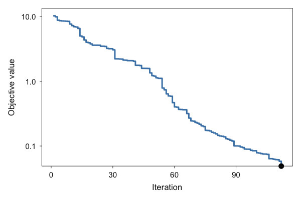
The trajectory has 112 iterations. Integer variables are drawn by SPRITE without annealing, so their trajectory consists of a single value.
plot_cooling() shows the temperature schedule implied by
init_temp, cooling_rate, and
max_iter:
plot_cooling(result_vec)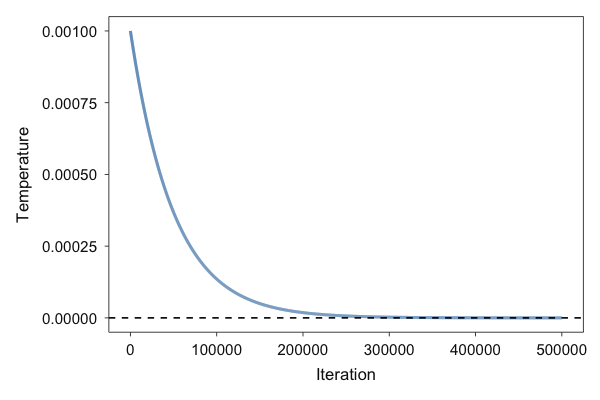
1.6 Target vs. simulated statistics
plot_fit() plots the difference between simulated and
target statistics. With standardised = FALSE, the
differences are on the original scale; the shaded band marks
+/- thresh. order = "fit" sorts the statistics
by absolute difference.
plot_fit(result_vec, standardised = FALSE, order = "fit")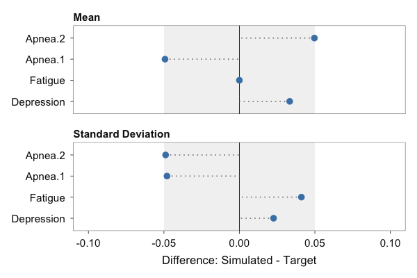
The same plots are available through plot(), with
which selecting the panel:
1.7 Simulated data
The simulated data are stored in result_vec$data, one
column per variable:
data_vec <- result_vec$data
head(data_vec)
#> Apnea.1 Apnea.2 Depression Fatigue
#> 1 75.77349 18.2021350 8 14
#> 2 62.38032 11.3144337 19 20
#> 3 18.60938 2.7516503 15 7
#> 4 53.29988 26.4374525 16 9
#> 5 56.48064 40.9638859 5 21
#> 6 24.81849 0.1944602 25 6
data_long <- data.frame(
variable = factor(rep(names(data_vec), each = nrow(data_vec)), levels = names(data_vec)),
value = unlist(data_vec, use.names = FALSE)
)
ggplot(data_long, aes(x = value)) +
geom_histogram(bins = 15, fill = "grey60", colour = "grey20") +
facet_wrap(~ variable, scales = "free") +
labs(x = NULL, y = "Count") +
theme_minimal()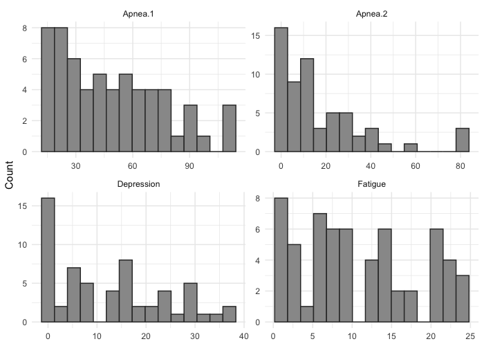
2. MLR module: Bardwell et al. (2007)
Bardwell et al. (2007) also report a multiple linear regression of
Fatigue on the two apnea indices and
Depression, with coefficients, standard errors, and the
correlations of each predictor with Fatigue.
optim_mlr() simulates data that reproduce these targets
together with the marginal statistics from Section 1.
2.1 Encoding the targets
reg_equation <- "Fatigue ~ Apnea.1 + Apnea.2 + Depression"
target_reg <- c("(Intercept)" = 4.020, Apnea.1 = 0.023, Apnea.2 = 0.008, Depression = 0.438)
target_se <- c(NA, 0.034, 0.048, 0.066)
target_cor <- c(NA, NA, NA, 0.11, 0.20, 0.68)target_reg and target_se follow the terms
of reg_equation, intercept first. target_cor
holds the upper triangle of the correlation matrix of all variables in
target_mean, filled column by column in the order of
target_mean: Apnea.1-Apnea.2,
Apnea.1-Depression, Apnea.2-Depression,
Apnea.1-Fatigue, Apnea.2-Fatigue,
Depression-Fatigue. NA marks statistics that
were not reported; they are excluded from the objective.
2.2 Running the optimizer
optim_mlr() first calls optim_vec() to
simulate the marginals and then reorders the values of the predictors
with simulated annealing, followed by hill climbing
(hill_climbs). The objective is
weight * correlation error + (1 - weight) * regression error,
where the regression error includes the standard errors when
target_se is given.
The call uses thresh = 0.001,
sprite_prec = c(1, 1) as in Section 1, and the defaults
otherwise (weight = 0.5, max_iter = 1e5,
max_starts = 3, hill_climbs = 1e4;
init_temp = NULL is calibrated from the objective changes
of random swaps, cooling_rate = NULL is
(max_iter - 10) / max_iter).
2.3 Inspecting the result
result_mlr
#> stats2data MLR result
#> N: 60
#> Equation: Fatigue ~ Apnea.1 + Apnea.2 + Depression
#> Best objective: 0.00225996The best objective value is 0.00226, which is not below
thresh = 0.001.
summary(result_mlr)
#> stats2data MLR Summary
#> -----------------------------------------------
#> N: 60 | Model: Fatigue ~ Apnea.1 + Apnea.2 + Depression
#> Best objective: 0.00225996
#>
#> RMSE
#> Correlations: 0.00002284
#> Regression Coefficients: 0.0003972
#> Standard Errors: 0.006854
#>
#> Descriptives (Target vs. Simulated):
#> variable target_mean sim_mean target_sd sim_sd
#> Apnea.1 48.8 48.80 27.1 27.099
#> Apnea.2 17.3 17.30 20.1 20.099
#> Depression 12.6 12.60 11.3 11.283
#> Fatigue 10.8 10.82 7.3 7.347
#>
#> Coefficients (Target vs. Simulated):
#> term target_reg sim_reg target_se sim_se
#> (Intercept) 4.020 4.020297 NA 1.65638
#> Apnea.1 0.023 0.023138 0.034 0.02754
#> Apnea.2 0.008 0.008704 0.048 0.03809
#> Depression 0.438 0.437831 0.066 0.06500
#>
#> Correlations (Target vs. Simulated):
#> pair target_cor sim_cor
#> Apnea.1-Apnea.2 NA 0.28831
#> Apnea.1-Depression NA 0.02649
#> Apnea.2-Depression NA 0.22546
#> Apnea.1-Fatigue 0.11 0.11001
#> Apnea.2-Fatigue 0.20 0.20000
#> Depression-Fatigue 0.68 0.67996get_stats() returns the fitted lm object,
the coefficients, standard errors, correlations (upper triangle in the
order predictors, outcome), means, and SDs of the simulated data.
coef() refits the regression and returns the
coefficients:
stats_mlr <- get_stats(result_mlr)
names(stats_mlr)
#> [1] "model" "reg" "se" "cor" "mean" "sd"
summary(stats_mlr$model)
#>
#> Call:
#> stats::lm(formula = frm, data = d)
#>
#> Residuals:
#> Min 1Q Median 3Q Max
#> -13.1641 -3.0217 -0.8974 4.5710 11.1889
#>
#> Coefficients:
#> Estimate Std. Error t value Pr(>|t|)
#> (Intercept) 4.020297 1.656380 2.427 0.0185 *
#> Apnea.1 0.023138 0.027536 0.840 0.4043
#> Apnea.2 0.008704 0.038093 0.228 0.8201
#> Depression 0.437831 0.065002 6.736 0.00000000945 ***
#> ---
#> Signif. codes: 0 '***' 0.001 '**' 0.01 '*' 0.05 '.' 0.1 ' ' 1
#>
#> Residual standard error: 5.484 on 56 degrees of freedom
#> Multiple R-squared: 0.4713, Adjusted R-squared: 0.443
#> F-statistic: 16.64 on 3 and 56 DF, p-value: 0.0000000752
coef(result_mlr)
#> (Intercept) Apnea.1 Apnea.2 Depression
#> 4.020297185 0.023137936 0.008703818 0.437831483
get_rmse(result_mlr)
#> $rmse_cor
#> [1] 0.00002283587
#>
#> $rmse_reg
#> [1] 0.00039721
#>
#> $rmse_se
#> [1] 0.006854068The marginal result of the internal optim_vec() call is
stored in result_mlr$optim_vec and supports the methods of
Section 1:
get_rmse(result_mlr$optim_vec)
#> $rmse_mean
#> [1] 0.008362809
#>
#> $rmse_sd
#> [1] 0.025221392.4 Diagnostics
plot_convergence() shows the best objective value across
the annealing iterations; first_iter skips leading
iterations, here the first 10%:
n_iter_mlr <- length(result_mlr$track_objective)
plot_convergence(result_mlr, log_y = TRUE, first_iter = floor(n_iter_mlr / 10))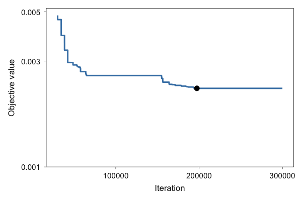
With ratio = TRUE, the plot shows the ratio of the
correlation error to the regression error of the best candidate, with
lines at its mean, median, and final value (show_mean,
show_median, show_final). A ratio above 1
means that the correlation component is the larger of the two.
plot_convergence(result_mlr, ratio = TRUE)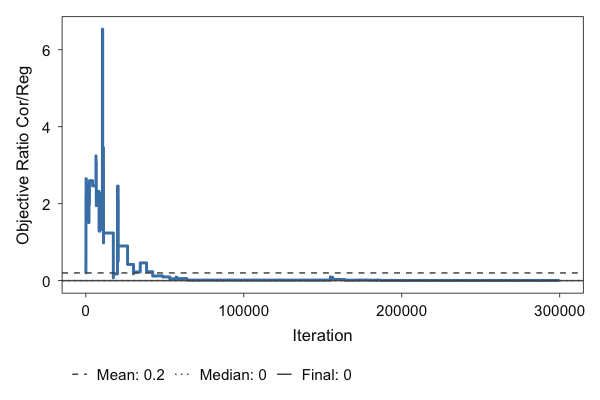
The final ratio is 0.00509.
plot_cooling() uses the stored init_temp
and cooling_rate, i.e. the values calibrated during the
run:
result_mlr$inputs$init_temp
#> [1] 0.03931238
plot_cooling(result_mlr)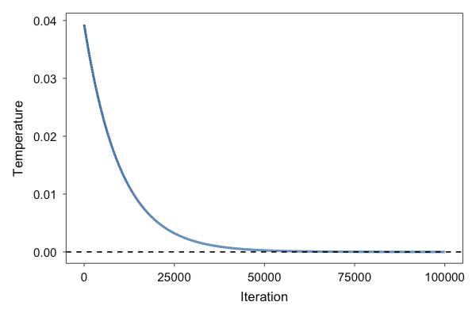
2.5 Balancing the objective with weight
weight sets how much the correlation and the regression
components contribute to the objective. Objective values obtained with
different weights are on different scales and are not compared directly;
the unweighted RMSEs of get_rmse() are. The optimization is
repeated with weight = 0.1:
set.seed(2026)
result_mlr_w01 <- optim_mlr(
N = N,
target_mean = target_mean,
target_sd = target_sd,
range = range,
integer = integer,
sprite_prec = c(1, 1),
reg_equation = reg_equation,
target_cor = target_cor,
target_reg = target_reg,
target_se = target_se,
thresh = 0.001,
weight = 0.1
)
rbind(
"weight = 0.5" = unlist(get_rmse(result_mlr)),
"weight = 0.1" = unlist(get_rmse(result_mlr_w01))
)
#> rmse_cor rmse_reg rmse_se
#> weight = 0.5 0.00002283587 0.0003972100 0.0068540684
#> weight = 0.1 0.00194172165 0.0006876133 0.0009375174The table shows how the RMSEs of the correlations, coefficients, and
standard errors change with weight in this example. Which
balance is preferable depends on which targets matter most for the
intended use of the data. The remainder of this section continues with
the weight = 0.5 result.
2.6 Target vs. simulated statistics
plot_fit(result_mlr, standardised = FALSE)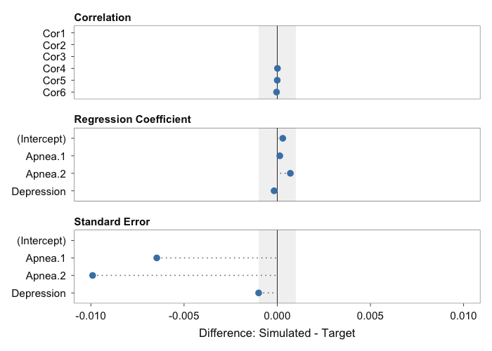
With the default standardised = TRUE, the differences
are divided by the target values (for targets of zero, the
unstandardised difference is shown). The plot() method
offers the same panels, including which = "ratio":
2.7 Simulated data
data_mlr <- result_mlr$data
head(data_mlr)
#> Apnea.1 Apnea.2 Depression Fatigue
#> 1 64.13553 17.754307 11 18
#> 2 17.86473 15.232345 15 14
#> 3 110.29750 17.351951 0 15
#> 4 29.09759 32.718223 16 11
#> 5 47.35261 14.904594 11 7
#> 6 28.03631 1.847764 9 6
round(cor(data_mlr), 2)
#> Apnea.1 Apnea.2 Depression Fatigue
#> Apnea.1 1.00 0.29 0.03 0.11
#> Apnea.2 0.29 1.00 0.23 0.20
#> Depression 0.03 0.23 1.00 0.68
#> Fatigue 0.11 0.20 0.68 1.003. ANOVA module: Reynolds and Besner (2008)
This section follows the empirical example of the accompanying manuscript. Reynolds and Besner (2008, Experiment 5) examined how contextual predictability affects response times in word and nonword naming; the study was among those replicated by the Open Science Collaboration (2015). To our knowledge, the raw data are not publicly available.
3.1 Reported summary statistics
The study reports a 2 x 2 within-subjects design
(S = 16) with four cell means, indexed by stimulus type
(Factor1) and switch condition (Factor2): 543,
536, 614, and 618 ms. It reports MSE = 3070 for the
Factor1 effect, F(1, 15) = 30.5 (partial eta
squared .670) for Factor1, and F < 1 for
Factor2 (.002) and the interaction (.015).
The code of this section is the code of the empirical example in the manuscript, so it reproduces the results reported there.
S <- 16
mse <- 3070
target_group_means <- c(543, 536, 614, 618)
eta2 <- c(0.002, 0.015) # Factor2, Factor1:Factor2
df_err <- S - 1The numerator mean squares implied by the cell means of the balanced 2 x 2 within-subjects design are:
m_cell <- matrix(target_group_means, nrow = 2, byrow = TRUE) # rows: Factor1, cols: Factor2
m_grand <- mean(m_cell)
ms_f1 <- S * 2 * sum((rowMeans(m_cell) - m_grand)^2)
ms_f2 <- S * 2 * sum((colMeans(m_cell) - m_grand)^2)
ms_int <- S * sum((m_cell - outer(rowMeans(m_cell), colMeans(m_cell), "+") + m_grand)^2)
c(ms_f1 = ms_f1, ms_f2 = ms_f2, ms_int = ms_int)
#> ms_f1 ms_f2 ms_int
#> 93636 36 484The reported Factor1 statistics are consistent with each
other: the implied mean square divided by the reported MSE
gives F = 30.5, and F / (F + df_error) gives
the reported partial eta squared of .670.
For the two effects reported as F < 1, the
F-statistics are set from the reported partial eta squared via
F = eta^2 * df_error / (1 - eta^2) (one numerator degree of
freedom). The modules require bounds for the outcome, which the study
does not report; the range of the reported cell means is extended by
four times sqrt(MSE), the residual SD implied by the MSE,
and rounded outward. The summary statistics are encoded in one list of
optim_aov() arguments:
F_value_derived <- c(round(ms_f1 / mse, 1), round(eta2 * df_err / (1 - eta2), 3))
sumstats <- list(
S = S,
levels = c(2, 2),
factor_type = c("within", "within"),
formula = "outcome ~ Factor1 * Factor2 + Error(ID / (Factor1 * Factor2))",
integer = FALSE,
target_f_list = list(
effect = c("Factor1", "Factor2", "Factor1:Factor2"),
F_value = F_value_derived
),
target_group_means = target_group_means,
range = c(floor(min(target_group_means) - 4 * sqrt(mse)),
ceiling(max(target_group_means) + 4 * sqrt(mse)))
)
sumstats$target_f_list$F_value
#> [1] 30.500 0.030 0.228
sumstats$range
#> [1] 314 840target_group_means lists the cells with
Factor1 varying slowest (11, 12, 21, 22).
3.2 Simulating a dataset
optim_aov() is called with its default hyperparameters
(max_iter = 3e4, thresh = 0.005,
max_starts = 3, init_temp = 1e-3,
cooling_rate = NULL,
i.e. (max_iter - 10) / max_iter). The objective is the RMSE
between the simulated and target F-statistics.
3.3 Inspecting the output
result_aov
#> stats2data ANOVA result
#> Design: 2 x 2 (within, within)
#> Subjects: 16
#> Effects: Factor1, Factor2, Factor1:Factor2
#> Best objective: 0.00346117The best objective value is 0.00346, which is below
thresh = 0.005. The best objective value first fell below
thresh at iteration 8493:
which(result_aov$track_objective < result_aov$inputs$thresh)[1]
#> [1] 8493
summary(result_aov)
#> stats2data ANOVA Summary
#> -----------------------------------------------
#> Design: 2 x 2 (within, within)
#> Subjects: 16
#> Best objective: 0.00346117
#>
#> RMSE
#> F-statistics: 0.003461
#> Group means: 0.0000000000009747
#>
#> -----------------------------------------------
#> F-values (Target vs. Simulated):
#> effect target_F sim_F
#> Factor1 30.500 30.49911
#> Factor2 0.030 0.02408
#> Factor1:Factor2 0.228 0.22774
#>
#> -----------------------------------------------
#> Group Means (Target vs. Simulated):
#> cell target_mean sim_mean
#> F1=1, F2=1 543 543
#> F1=1, F2=2 536 536
#> F1=2, F2=1 614 614
#> F1=2, F2=2 618 618The simulated F-statistics are 30.499, 0.024, 0.228 for
Factor1, Factor2, and
Factor1:Factor2 (targets 30.5, 0.030, 0.228); the
F-statistic RMSE is 0.003 and the cell-mean RMSE 0.000000000000975.
Before the annealing, optim_aov() may shift the target
cell means by less than thresh so that the means and
F-statistics can be matched jointly. The values used are stored in
adjusted_targets:
result_aov$adjusted_targets
#> $group_means
#> [1] 543 536 614 618
#>
#> $F_values
#> [1] 30.500 0.030 0.228get_stats() returns the ANOVA table of the simulated
data (fitted with afex), the F-statistics, and the cell
means; get_rmse() returns the two RMSEs:
get_stats(result_aov)
#> $model
#> Anova Table (Type 3 tests)
#>
#> Response: outcome
#> num Df den Df MSE F ges Pr(>F)
#> Factor1 1 15 3070.1 30.4991 0.43050 0.00005852 ***
#> Factor2 1 15 1495.2 0.0241 0.00029 0.8788
#> Factor1:Factor2 1 15 2125.2 0.2277 0.00389 0.6401
#> ---
#> Signif. codes: 0 '***' 0.001 '**' 0.01 '*' 0.05 '.' 0.1 ' ' 1
#>
#> $F_value
#> [1] 30.49911423 0.02407665 0.22773815
#>
#> $mean
#> 1_1 1_2 2_1 2_2
#> 543 536 614 618
get_rmse(result_aov)
#> $rmse_F
#> [1] 0.003461175
#>
#> $rmse_mean
#> [1] 0.00000000000097466163.4 Diagnostic plots
The two panels of the manuscript figure are obtained with
(first_iter = 1 skips the first iteration):
plot_convergence(result_aov, first_iter = 1, log_y = TRUE)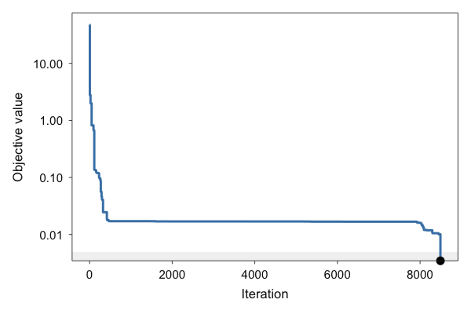
plot_fit(result_aov, standardised = FALSE)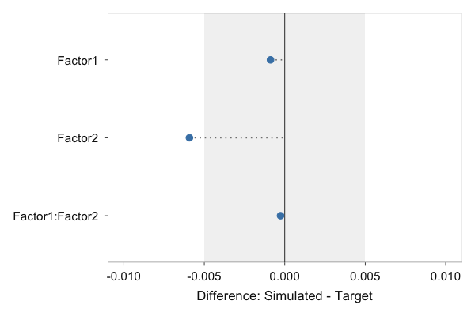
show_best = FALSE removes the marker of the best value
and thresh = NULL the shaded band:
plot_convergence(result_aov, show_best = FALSE, thresh = NULL)plot_cooling() shows the temperature schedule:
plot_cooling(result_aov)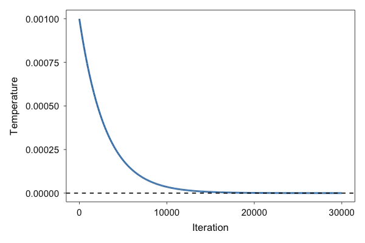
3.5 Simulated data
The data are stored in long format, one row per subject and cell. The
simulated observations lie within range; the second line
checks whether any observation equals one of the bounds:
range(result_aov$data$outcome)
#> [1] 469.2889 735.7955
any(result_aov$data$outcome %in% sumstats$range)
#> [1] FALSE
data_aov <- result_aov$data
head(data_aov)
#> ID Factor1 Factor2 outcome
#> 1 1 1 1 526.5609
#> 2 1 1 2 594.2713
#> 3 1 2 1 641.5214
#> 4 1 2 2 551.0167
#> 5 2 1 1 535.8782
#> 6 2 1 2 549.8449
aggregate(outcome ~ Factor1 + Factor2, data = data_aov, FUN = mean)
#> Factor1 Factor2 outcome
#> 1 1 1 543
#> 2 2 1 614
#> 3 1 2 536
#> 4 2 2 618
ggplot(data_aov, aes(x = interaction(Factor1, Factor2, sep = "-"), y = outcome)) +
geom_jitter(width = 0.1, colour = "grey40") +
stat_summary(fun = mean, geom = "point", shape = 4, size = 4) +
labs(x = "Cell (Factor1-Factor2)", y = "Outcome") +
theme_minimal()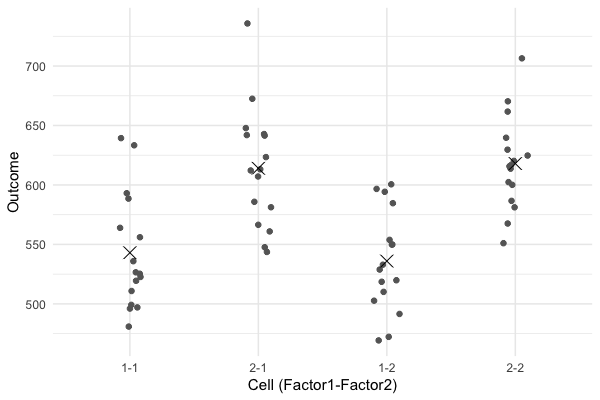
Crosses mark the simulated cell means.
4. Parallel workflow: Reynolds and Besner (2008)
Each run of an optimizer is subject to randomness, and many datasets
share the same summary statistics, so repeated runs return different
datasets. parallel_optim() repeats the optimization with
the same arguments and collects the runs. As in the manuscript, the
ANOVA optimization is repeated 100 times on 6 parallel workers using
future::multisession (Bengtsson, 2021); seed
gives each run its own reproducible random-number stream.
result_parallel_aov <- parallel_optim(
FUN = optim_aov, # ANOVA module
args = sumstats, # reported summary statistics
runs = 100, # number of optimization runs
cores = 6, # number of parallel workers
seed = 2026, # future.seed for parallel workers
stop_conv = FALSE # whether to stop once a run converges
)cores = 1 (the default) runs the replications
sequentially; cores > 1 requires the packages
future and future.apply. Because every run has
its own random-number stream derived from seed, the results
do not depend on cores.
4.1 Inspecting the parallel output
result_parallel_aov
#> stats2data parallel result
#> Module: aov
#> Runs: 100
#> Best objective (across runs): 0.00106352
#> Mean objective (across runs): 0.0038539100 of 100 runs have a best objective value below thresh
= 0.005. Across runs, the best objective values range from 0.00106 to
0.00499, and the simulated observations of all runs range from 358.1 to
765.9:
max(sapply(result_parallel_aov$results, function(x) x$best_objective)) < .005
#> [1] TRUE
sum(vapply(result_parallel_aov$results,
function(r) r$best_objective < r$inputs$thresh, logical(1)))
#> [1] 100
range(unlist(lapply(result_parallel_aov$results, function(r) r$data$outcome)))
#> [1] 358.1386 765.8632summary() lists the best and mean objective values, the
RMSE against the targets and between runs, and the target statistics
aggregated across runs:
summary(result_parallel_aov)
#> stats2data Parallel Summary
#> -----------------------------------------------
#> Module: aov | Runs: 100
#> Best objective: 0.00106352
#> Mean error: 0.0038539
#> SD error: 0.00107989
#>
#> Target RMSE (across runs):
#> metric mean sd min max
#> rmse_F 0.003854 0.00108 0.001064 0.004993
#>
#> Between-run RMSE:
#> metric mean sd min max
#> rmse_F 0.002037 0.001176 0.0003188 0.00747
#>
#> Aggregated Statistics:
#> F_value:
#> mean median sd min max
#> 1 30.49988 30.50007 0.002090 30.49379 30.50390
#> 2 0.02439 0.02308 0.003290 0.02143 0.03728
#> 3 0.22786 0.22779 0.001234 0.22488 0.23112
#>
#> mean:
#> mean median sd min max
#> 1_1 543 543 0.0000000000009403 543 543
#> 1_2 536 536 0.0000000000009664 536 536
#> 2_1 614 614 0.0000000000009346 614 614
#> 2_2 618 618 0.0000000000009585 618 618get_stats() aggregates each statistic across runs (mean,
median, SD, minimum, maximum):
get_stats(result_parallel_aov)
#> $F_value
#> mean median sd min max
#> 1 30.49988225 30.50006753 0.002090449 30.49379382 30.50390112
#> 2 0.02439294 0.02307733 0.003290052 0.02143349 0.03727947
#> 3 0.22786082 0.22779020 0.001233544 0.22487923 0.23112459
#>
#> $mean
#> mean median sd min max
#> 1_1 543 543 0.0000000000009403361 543 543
#> 1_2 536 536 0.0000000000009663550 536 536
#> 2_1 614 614 0.0000000000009345567 614 614
#> 2_2 618 618 0.0000000000009584873 618 618get_rmse() returns two RMSEs per run and metric:
target_rmse, against the targets, and
between_rmse, against the across-run mean of the simulated
statistics. The per-run values are in raw:
par_rmse$target_rmse
#> metric mean sd min max
#> 1 rmse_F 0.003853902 0.001079895 0.00106352 0.004992881
par_rmse$between_rmse
#> metric mean sd min max
#> 1 rmse_F 0.002036642 0.001175672 0.0003187576 0.007469883The mean F-statistic RMSE against the targets is 0.00385 (maximum 0.00499); the mean run-to-run RMSE is 0.00204. The run-to-run RMSE quantifies how much the simulated F-statistics vary between runs; it does not compare the runs with the original data.
4.2 Stability and fit across runs
The two panels of the manuscript figure are plot(),
which draws plot_stability(), and plot_fit().
plot_stability() shows the distributions of both RMSEs
across runs, faceted by metric:
plot_stability(result_parallel_aov)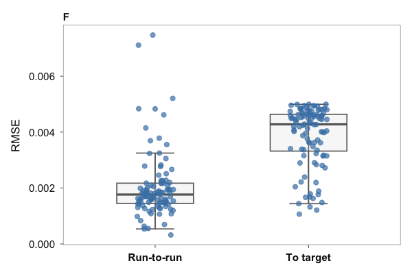
plot_fit() shows the across-run mean difference per
statistic, with error bars for the across-run range
(error_type = "range", default) or mean +/- SD
(error_type = "sd"); dots mark the individual runs.
plot_fit(
result_parallel_aov,
standardised = FALSE
)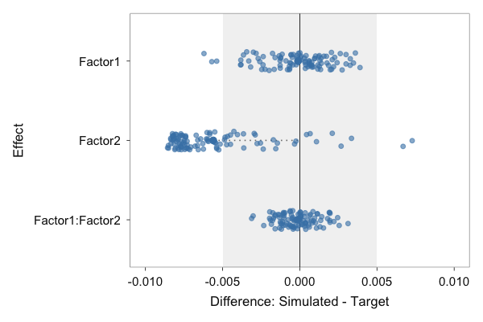
plot_fit(result_parallel_aov, standardised = FALSE, error_type = "sd")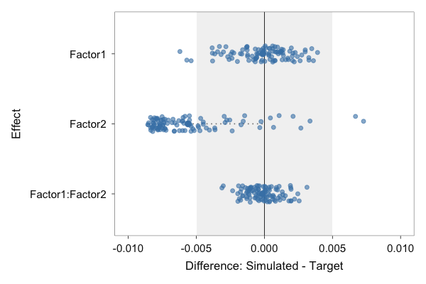
plot() draws plot_stability() by default
(as in the manuscript script) and plot_fit() with
which = "fit":
4.3 Individual runs
The run with the lowest best objective value is stored in
best; all runs are in results. Both are
ordinary stats2data_aov objects and support the methods of
Section 3:
result_parallel_aov$best
#> stats2data ANOVA result
#> Design: 2 x 2 (within, within)
#> Subjects: 16
#> Effects: Factor1, Factor2, Factor1:Factor2
#> Best objective: 0.00106352
get_rmse(result_parallel_aov$best)
#> $rmse_F
#> [1] 0.00106352
#>
#> $rmse_mean
#> [1] 0.0000000000009426415
head(result_parallel_aov$results[[2]]$data)
#> ID Factor1 Factor2 outcome
#> 1 1 1 1 543.7920
#> 2 1 1 2 484.1879
#> 3 1 2 1 630.0790
#> 4 1 2 2 590.7470
#> 5 2 1 1 629.6518
#> 6 2 1 2 526.12764.4 Stopping at the first converged run
With stop_conv = TRUE, parallel_optim()
stops launching runs once a run has converged. With
cores > 1, runs are dispatched in batches of
cores, so a whole batch completes before the check:
result_first_aov <- parallel_optim(
FUN = optim_aov,
args = sumstats,
runs = 12,
cores = 6,
seed = 2026,
stop_conv = TRUE
)
result_first_aov
#> stats2data parallel result
#> Module: aov
#> Runs: 6 of 12 (stopped early)
#> Converged: TRUE (thresh = 0.005 )
#> Best objective (across runs): 0.00317099
#> Mean objective (across runs): 0.004118336 of 12 requested runs were completed.
References
- Bardwell, W. A., Ancoli-Israel, S., & Dimsdale, J. E. (2007). Comparison of the effects of depressive symptoms and apnea severity on fatigue in patients with obstructive sleep apnea: A replication study. Journal of Affective Disorders, 97(1-3), 181-186. https://doi.org/10.1016/j.jad.2006.06.013
- Bengtsson, H. (2021). A unifying framework for parallel and distributed processing in R using futures. The R Journal, 13(2), 208-227. https://doi.org/10.32614/RJ-2021-048
- Brown, N. J. L., & Heathers, J. A. J. (2017). The GRIM test: A simple technique detects numerous anomalies in the reporting of results in psychology. Social Psychological and Personality Science, 8(4), 363-369. https://doi.org/10.1177/1948550616673876
- Heathers, J. A., Anaya, J., van der Zee, T., & Brown, N. J. L. (2018). Recovering data from summary statistics: Sample Parameter Reconstruction via Iterative TEchniques (SPRITE). PeerJ Preprints, 6, e26968v1. https://doi.org/10.7287/peerj.preprints.26968v1
- Open Science Collaboration. (2015). Estimating the reproducibility of psychological science. Science, 349(6251), aac4716. https://doi.org/10.1126/science.aac4716
- Reynolds, M., & Besner, D. (2008). Contextual effects on reading aloud: Evidence for pathway control. Journal of Experimental Psychology: Learning, Memory, and Cognition, 34(1), 50-64. https://doi.org/10.1037/0278-7393.34.1.50